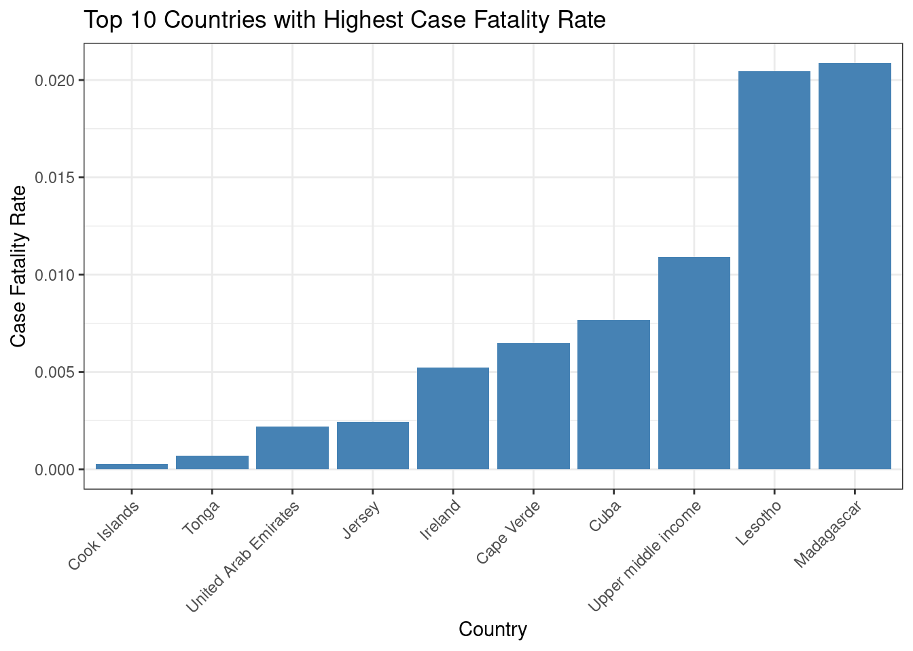
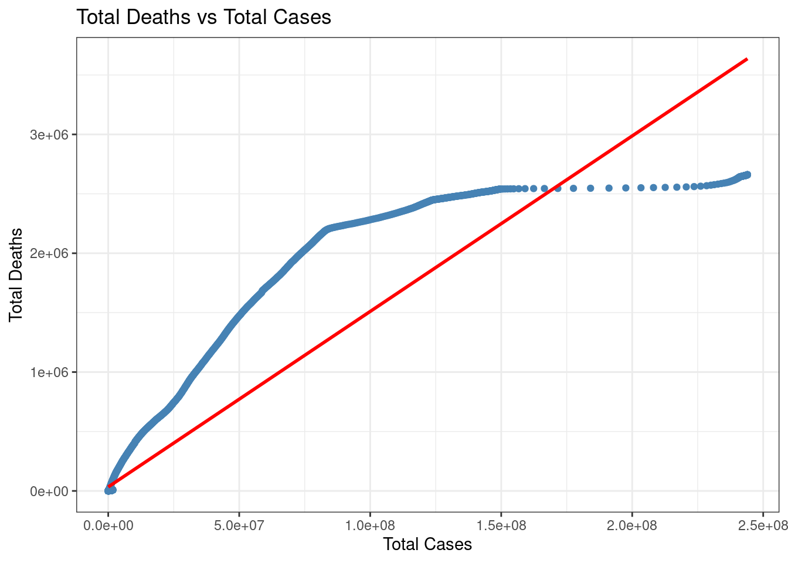
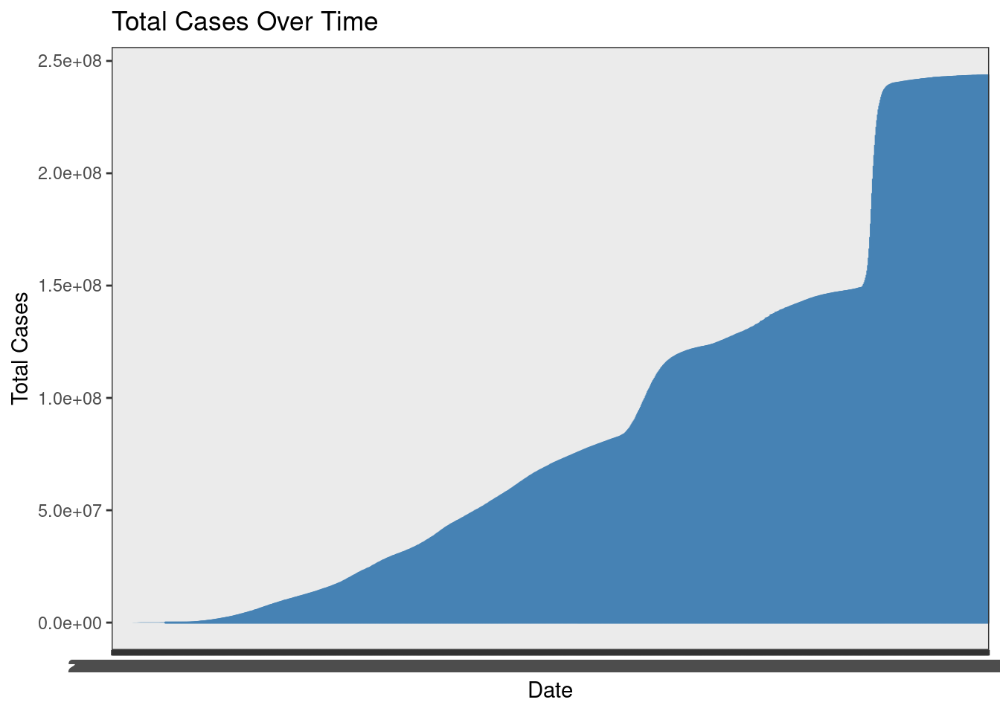
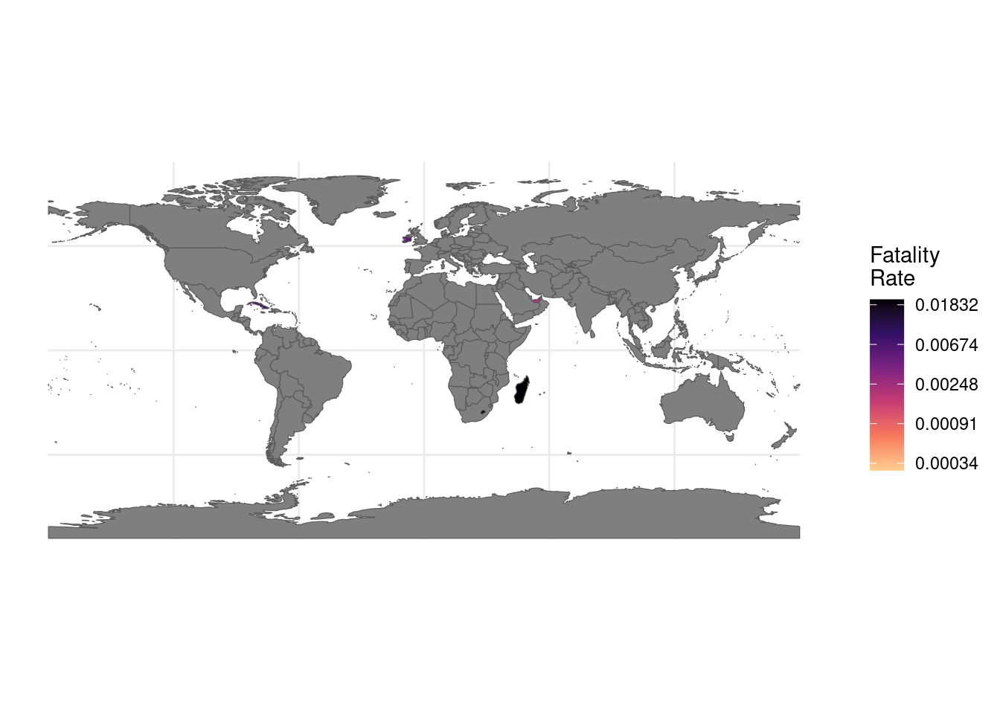

Comparing Ireland’s COVID-19 position to those of nine other nations
Introduction
In order to properly tackle the COVID-19 epidemic, it is important to comprehend the problem and examine how other countries have responded. This paper focuses on comparing Ireland’s COVID-19 position to those of nine other nations.
An important instrument for evaluating the success of public health initiatives and policy changes made in response to the crisis is the comparative study of the COVID-19 pandemic in Ireland and 9 other countries. We may learn more about the advantages and disadvantages of various tactics by looking at data patterns, immunization rates, and testing methods. This analysis intends to assist in controlling the continuing epidemic globally and to help guide future decision-making. Along with the other chosen nations, Ireland has had particular difficulties throughout the epidemic. For each country, this report will give a thorough review of the major variables, including total cases, total fatalities, testing rates, and immunization progress. We can find parallels, discrepancies, and probable causes affecting the results by contrasting various measurements.
A captivating story will be presented in the Quarto Report paper, backed by visualizations that show the trends and patterns in the COVID-19 data. The sequence of events, policy changes, and their effects on the pandemic’s course in Ireland and other nations will all be covered in detail in the study. With the help of this study, we want to further knowledge of the COVID-19 situation, offer insightful information to policymakers, and aid in the facilitation of well-informed choices in the current pandemic response.
Aim & Objectives Aim
The main aim of this research is to compare Ireland’s COVID-19 status with that of nine other nations using the available datasheets in order to learn more about how well public health initiatives and policy interventions are working to control the pandemic.
Objectives
To find parallels and differences, examine the trends in the number of COVID-19 cases, fatalities, and testing rates in Ireland and other countries.
To analyze the overall vaccinations, vaccination rates, and coverage in Ireland and the comparative countries to assess the effectiveness of immunization efforts.
To analyze the success of the legislative changes and public health initiatives that Ireland and the comparative nations have made in preventing the virus’s spread.
To make suggestions for the next pandemic response tactics based on the results and understandings from the comparative study.
Background
The new Covid SARS-CoV-2 that set off the Coronavirus pandemic has arisen as one of the main worldwide well-being disasters in late memory. The infection has quickly crossed global lines since it originally arose in Wuhan, China, in late 2019. It has now tainted a large number of people and upset networks everywhere (Basak et al. 2022). Legislatures, clinical establishments, and analysts have increased their determination to appreciate the infection, screen its spread, and make productive countermeasures.
This study centers around contrasting Ireland’s situation with that of nine different countries during the Coronavirus plague. To control the infection’s spread and safeguard the general’s well-being, Ireland, in the same way as other different nations, has needed to defeat different hindrances (Zuhanda et al. 2023). All desire to look further into the viability of different general well-being drives, strategy changes, and pandemic reaction plans utilized by Ireland and the picked countries by playing out a near examination.
The correlation of Ireland and different countries looks to feature significant patterns and factors that have molded the pandemic’s direction (Radanliev et al. 2022). Clients can detect patterns in the pandemic’s belongings by dissecting designs in cases, fatalities, testing rates, and antibody advancement. This study will likewise make it conceivable to evaluate general well-being drives and strategy changes as far as how well they work to stop the infection’s spread and reduce its belongings.
It is fundamental to fathom how Ireland’s encounters contrast with those of different countries to plan arrangements and settle on choices that are upheld by realities. It offers an opportunity to concentrate on viable strategies utilized abroad and pinpoint potential regions where Ireland’s pandemic reaction might be fortified (Chaerani et al.2023). By considering the particular characteristics of every country, for example, its financial cosmetics and medical care framework, we might foster an intensive handle on the factors that influence the pandemic’s course.
The target of this study is to introduce a far-reaching examination of the Corona virus circumstance in Ireland and the other tantamount countries. We can track down patterns, examples, and associations through information investigation and perception, which assists us with fathoming the pandemic’s belongings better (Okolie et al. 2022). The discoveries won’t just further comprehension we might interpret Corona virus however will likewise help lawmakers, clinical experts, and general well-being specialists foster future reaction plans.
Engineers can deliver huge bits of knowledge that help proof-based navigation by utilizing accessible information and using solid systematic instruments. The goal is to help worldwide endeavors in controlling the ongoing scourge, propelling general well-being, and guaranteeing the government assistance of individuals and networks (Zuhanda et al. 2022). In this review, the Corona virus pandemic in Ireland and nine different countries will be looked at and broken down. designers trust that our examination will assist with illuminating future independent direction by surveying the adequacy of strategy intercessions, pandemic reaction procedures, and general well-being drives (Yilmaz et al. 2022). Analysts might progress worldwide information and further develop status for impending well-being crises by appreciating explicit realities and encounters of every country.
Method This comparative analysis of the COVID-19 pandemic in Ireland and nine other countries was conducted using a technique that includes the gathering of data, maltreatment of the data, exploratory data analysis, and visualization. The approach taken for this project is described in the following:
Data collection: “country_data.csv” is the main data set utilized for this investigation. This file includes crucial details on COVID-19 parameters, including total cases, total fatalities, testing rates, immunization progress, and more statistics for each nation.
Data reprocessing: To guarantee consistency and compatibility for analysis, the data from the data sets are reprocessed. To include the COVID-19 metrics with extra nation metadata, this entails managing missing values, switching data types as necessary, and combining pertinent records.
Exploratory Data Analysis (EDA): EDA is carried out to understand the traits and trends of the data. The distribution of COVID-19 metrics is investigated, outlines are identified, and temporal patterns are explored using descriptive statistics, data summaries, and visualizations. EDA lays the groundwork for additional research and aids in revealing links between variables (Del Riccio et al. 2022).
Comparative Analysis: The comparative analysis compares Ireland’s COVID-19 status to those of the other nine chosen nations. Key metrics are analyzed and compared between nations, including total cases, total fatalities, testing rates, and immunization progress. To emphasize similarities, contrasts, and trends, statistical measurements and visualizations such as bar charts, line graphs, and scatter plots are used.
Evaluation of Public Health Interventions and Policy Measures: The study determines if public health interventions and policy measures carried out in Ireland and other nations are successful. This entails looking at the progression of events, policy changes, and their possible effects on the pandemic’s course. Comparative analysis makes it possible to pinpoint winning tactics and takeaways from various nations’ methods (Bull-Otterson et al. 2022).
Visualizations: In this analysis, visualizations are essential for successfully communicating information and improving data interpretation. We use a variety of visualizations to show trends, comparisons, and correlations across COVID-19 indicators, including bar charts, line graphs, scatter plots, and heatmaps. These graphic depictions make it easier to spot trends, outliers, and connections in the data.
Conclusion and Interpretation: In order to reach meaningful conclusions, the results of the comparison analysis and visualizations are interpreted. The analysis’s objectives are to provide light on the COVID-19 situation in Ireland and the chosen nations, assess the efficacy of response plans, and pinpoint areas in need of improvement (Oh et al. 2022). On the basis of the analysis and interpretation of the findings, recommendations for future pandemic response tactics are developed.
It is crucial to remember that the technique presented here acts as the project’s overarching framework. Depending on the study topics, the availability of the data, and the analytically tools utilized, different methodologies, algorithms, and visualizations may be used (Lan et al. 2022). For reliable and significant findings, rigorous statistical analysis and visualization approaches are used.
By using this technique, developers want to carry out a thorough comparison study that offers insightful information about the COVID-19 epidemic in Ireland and the chosen nations. The technique promotes decision-making for public health authorities and policymakers that is based on evidence, assures the systematic analysis of data, and allows for effective data exploration and interpretation.
Data collection, reprocessing, exploratory data analysis, comparison analysis, assessment of interventions, and visualizations make up the approach for this project (Raya-González et al. 2022). Through the use of a strict approach, researchers want to contribute to the global knowledge base and facilitate well-informed decision-making on pandemic response tactics by offering a thorough grasp of the COVID-19 situation in Ireland and the chosen countries.
Data manipulation and the extraction of valuable insights from the information need data transformations, which are crucial in data analysis. In data transformations, the operations select, filter, modify, and summarise are frequently employed.
Users may choose particular columns from a dataset using select. Filter aids in subsetting data according to particular requirements or criteria. By performing computations or modifications on already-existing variables, modification permits the generation of new variables. Data may be aggregated, summary statistics can be calculated, and new summary variables can be created using summarising. These operations offer versatility in data manipulation, enabling analysts to concentrate on pertinent variables, select data in accordance with certain criteria, produce derived variables, and summarise data for additional examination and understanding.
Bar Chart
For the top 10 nations with the highest case fatality rate, the given code creates a bar chart that shows the case fatality rate. The top 10 nations from the mutated_data dataset are chosen using the top_n() function based on their case fatality rate. The bar chart is then produced using the ggplot() function.
The chart’s x-axis shows the nations in descending order of case fatality rate, while the y-axis shows the case fatality rate itself. Each bar in the graph represents a different nation, and its height represents the country’s case fatality rate.
The top 10 nations with the greatest case fatality rate are shown in the chart’s title. The nations are identified by the x-axis labels, while the case fatality rate is shown by the y-axis labels. The bar chart displaying the actual case fatality rate is produced using the geom_bar() function with stat = “identity”.
The nations with the greatest case fatality rates are clearly shown in this bar chart. We can quickly identify the nations with comparatively greater case fatality rates by comparing the heights of the bars. This data can aid in determining the extent of the pandemic’s effects in various nations and might reveal elements causing greater death rates.
Scatterplot

With the help of the given code, it is possible to visualise the correlation between the total number of cases and deaths in the dataset by creating a scatterplot with a linear regression line. The scatterplot is produced using the ggplot() tool.
The scatterplot’s x-axis displays the overall number of cases, while the y-axis displays the overall number of fatalities. The x and y coordinates of each data point in the scatterplot correspond to the total cases and total fatalities for that nation, respectively.
The data points are shown as distinct, steel blue dots using the geom_point() programme. Additionally, a linear regression line is drawn on the scatterplot using the geom_smooth() function with method = “lm”. This line provides a graphic depiction of the link between the total number of cases and fatalities.
The scatterplot’s caption makes it clear that it illustrates the connection between overall mortality and overall caseload. The variables being represented are made clear by the x- and y-axis labels. A white backdrop is used in the scatterplot’s design.
Understanding the correlation between the overall number of cases and fatalities is the key takeaway from this scatterplot with a linear regression line. It is possible to determine whether there is a positive connection between these variables by looking at the scatterplot and the linear regression line. If the line slopes positively, it means that if there are more instances overall, there are also more fatalities overall. A negative slope, on the other hand, would suggest an inverse connection.
This knowledge is essential for determining the scope and effects of the COVID-19 pandemic. It explains how variations in the number of cases may impact the number of fatalities. This data may be used by policymakers, healthcare providers, and public health authorities to track the pandemic’s development, create successful intervention plans, and allocate resources effectively. It facilitates the identification of nations or areas where an increase in cases may raise the danger of mortality and enables focused efforts to lessen the effects of the virus.
Time-Series Chart

The given code delivers a period series realistic that shows the general movement of Corona virus cases. The diagram is made utilizing the ggplot() capability, with the date displayed on the x-pivot and the absolute number of occurrences on the y-hub. The information focuses are then associated with structure a line utilizing the geom_line() capability, with each point showing the complete cases at a specific date.
The y-pivot mark shows the complete cases, while the x-hub name demonstrates the date. The title of the outline demonstrates that it shows the complete occurrences through time. The chart makes it simple to perceive how the general number of occurrences has changed and advanced during the predefined time span.
Understanding the Corona virus pandemic’s course is made more straightforward with the assistance of the time-series graph. Users can spot instances of a sudden rise or fall in cases, predict prospective outbreaks or waves, and evaluate the success of control measures by looking at the line’s trajectory over time.
The graphic enables comparisons across several time frames, allowing for the discovery of patterns and trends in viral propagation. It can shed light on how actions like lockdowns or immunizations affect limiting the virus’s spread and reducing the number of cases.
This time-series chart gives a thorough picture of all cases throughout time, making it simple to evaluate how the pandemic developed and how well the response measures worked. It assists in monitoring and analyzing the dynamics of the COVID-19 pandemic and informing decision-making processes for governments, healthcare professionals, and researchers.
World Map

The given code produces a World Map chart that shows the values related to various nations. The values and accompanying ISO codes for each nation are contained in the data frame “data”. The “maps” library’s “map_data(”world”)” function is used to get the world map data. The globe map data and the “data” frame based on the ISO codes are combined to form the data frame “merged_data”.
The “ggplot2” library is then used to build the World Map chart. The map is drawn using the “geom_map()” function, and the fill color represents the values assigned to each nation. The green to red color gradient for the fill is defined by the scale_fill_gradient() function, which also assigns “grey50” to nations without comparable values. The x-axis and y-axis labels are kept blank for simplicity, and the chart is given a title.
The values of various nations are shown visually in this World Map graphic. The color gradient makes it simple to distinguish between nations with high and low values. The information provided by this graph depends on the particular values it represents. The spread and severity of the pandemic or the development of global vaccination efforts, for instance, may be seen in the graphic if the values correspond to COVID-19 cases or vaccination rates. Informing decisions about global health interventions and resource allocation, it can assist in identifying regions or nations that need greater attention or resources. The graphic may help with comparisons and emphasis regional differences, giving policymakers, academics, and public health professionals important data.
Discussion
To change and retrieve useful information from the data set, the analysis starts with data transformations like select, filter, mutate, and summaries. The COVID-19 data are analysed using exploratory data approaches to identify trends, patterns, and correlations (Huang et al. 2022). To make data exploration easier and to draw attention to the most important discoveries, visualizations like bar charts, scatter plots, and heat maps are used.
The comparison between Ireland and the other nations offers insightful information about the course and effects of the epidemic. Similarities, discrepancies, and probable variables affecting the results are found by evaluating total cases, total fatalities, testing rates, immunization progress, and other pertinent data. The effectiveness of public health interventions and policy initiatives in halting the spread of the virus and lessening its negative effects may be evaluated.
A narrative that describes the COVID-19 scenario in Ireland and the other chosen nations is another goal of the project. Visualizations that help people better grasp the data and reinforce important findings serve as a foundation for this story (Bustos et al. 2022). Policymakers, healthcare practitioners, and public health authorities can make decisions that are well-informed thanks to the discussion and interpretation of the results.
The goal of the research is to enhance evidence-based decision-making and advance worldwide awareness of the COVID-19 pandemic by completing this extensive investigation. The project’s learning may be used to improve public health initiatives, future response plans, and the efficient management of the current pandemic. The ultimate goal of the initiative is to improve readiness and support international efforts to battle the COVID-19 pandemic.
Conclusion
The COVID-19 pandemic in Ireland has been thoroughly analyzed as part of this study, and it has been compared to nine other nations. Through data transformations, exploratory data analysis, and visualizations, we were able to learn a lot about the efficiency of policy interventions, pandemic response plans, and public health initiatives. The results illustrate commonalities, distinctions, and possible causes affecting the progression and results of the pandemic. The project’s narrative and visualizations help politicians and healthcare professionals make well-informed decisions. This initiative seeks to increase preparedness, direct resource allocation, and assist the efficient management of the current COVID-19 problem by increasing our understanding of the pandemic’s effects.
References
Basak, P., Abir, T., Al Mamun, A., Zainol, N.R., Khanam, M., Haque, M.R., Milton, A.H. and Agho, K.E., 2022. A global study on the correlates of gross domestic product (GDP) and COVID-19 vaccine distribution. Vaccines, 10(2), p.266.
Chaerani, D., Shuib, A., Perdana, T. and Irmansyah, A.Z., 2023. Systematic Literature Review on Robust Optimization in Solving Sustainable Development Goals (SDGs) Problems during the COVID-19 Pandemic. Sustainability, 15(7), p.5654.
Okolie, C.C. and Ogundeji, A.A., 2022. Effect of COVID-19 on agricultural production and food security: A scientometric analysis. Humanities and Social Sciences Communications, 9(1).
Zuhanda, M.K., Desniarti, D. and Hafiz, M., 2022. Twitter User Sentiment Analysis on the Mysterious Hepatitis Issue Rstudio. Journal of Informatics and Telecommunication Engineering, 6(1), pp.258-266.
Bull-Otterson, L., Baca, S., Saydah, S., Boehmer, T.K., Adjei, S., Gray, S. and Harris, A.M., 2022. Post–COVID conditions among adult COVID-19 survivors aged 18–64 and≥ 65 years—United States, March 2020–November 2021. Morbidity and Mortality Weekly Report, 71(21), p.713.
Lan, X., Yu, H. and Cui, L., 2022. Application of Telemedicine in COVID-19: A Bibliometric Analysis. Frontiers in Public Health, 10, p.908756.
Huang, C., Yang, L., Pan, J., Xu, X. and Peng, R., 2022. Correlation between vaccine coverage and the COVID‐19 pandemic throughout the world: Based on real‐world data. Journal of Medical Virology, 94(5), pp.2181-2187.
Bustos, V.P., Comer, C.D., Manstein, S.M., Laikhter, E., Shiah, E., Xun, H., Lee, B.T. and Lin, S.J., 2022. Twitter voices: Twitter users’ sentiments and emotions about COVID-19 vaccination within the United States. Eur J Environ Public Health, 6(1), p.em0096.
Radanliev, P., De Roure, D., Walton, R., Van Kleek, M., Santos, O. and Maddox, L.T., 2022. What Country, University, or Research Institute, Performed the Best on Covid-19 During the First Wave of the Pandemic? Bibliometric analysis of scientific literature–analysing a ’snapshot in time’of the first wave of COVID-19. Annals of Data Science, 9(5), pp.1049-1067.
Yilmaz, S., Sapci, I., Jia, X., Argalious, M., Taylor, M.A., Ridgeway, B.M., Haber, G.P. and Steele, S.R., 2022. Risk Factors Associated With Postoperative Mortality Among COVID-19 Positive Patients: Results of 3027 Operations and Procedures. Annals of Surgery, 276(6), p.969.
Del Riccio, M., Bechini, A., Buscemi, P., Bonanni, P., Working Group DHS and Boccalini, S., 2022. Reasons for the Intention to Refuse COVID-19 Vaccination and Their Association with Preferred Sources of Information in a Nationwide, Population-Based Sample in Italy, before COVID-19 Vaccines Roll Out. Vaccines, 10(6), p.913.
Oh, K.K., Adnan, M. and Cho, D.H., 2022. The promising mechanisms of low molecular weight compounds of Panax Ginseng CA Meyer in alleviating COVID-19: a network pharmacology analysis. Processes, 10(2), p.333.
Raya-González, J., García-Calvo, T., Rubio-Morales, A., Del Campo, R.L., Resta, R. and Ponce-Bordón, J.C., 2022. Influence of the COVID-19 lockdown on Spanish professional soccer teams’ external demands according to their on-field ranking. Biology of Sport, 39(4), pp.1081-1086.
Zuhanda, M.K., Anisa, Y., Desniarti, D., Hafiz, M., Syofra, A.H., Caraka, R.E. and Noh, M., 2023. Supply chain strategy during the COVID-19 terms: sentiment analysis and knowledge discovery through text mining. Indonesian Journal of Electrical Engineering and Computer Science, 30(2), p.1120. })